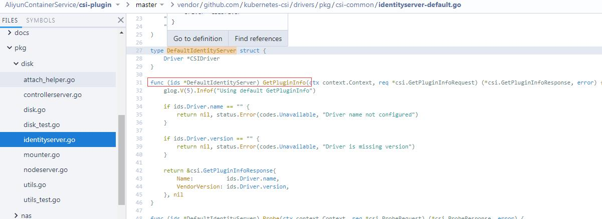

CSI开发
架构图

三个独立的外部组件（External Components），即：Driver Registrar、External Provisioner 和 External Attacher，对应的正是从 Kubernetes 项目里面剥离出来的那部分存储管理功能。
External Components 虽然是外部组件，但依然由 Kubernetes 社区来开发和维护。
External Components
Driver Registrar
负责将插件注册到 kubelet 里面（这可以类比为，将可执行文件放在插件目录下）。而在具体实现上，Driver Registrar 需要请求 CSI 插件的 Identity 服务来获取插件信息。
External Provisioner
负责的正是 Provision 阶段。在具体实现上，External Provisioner 监听（Watch）了 APIServer 里的 PVC 对象。当一个 PVC 被创建时，它就会调用 CSI Controller 的 CreateVolume 方法，为你创建对应 PV。
此外，如果你使用的存储是公有云提供的磁盘（或者块设备）的话，这一步就需要调用公有云（或者块设备服务）的 API 来创建这个 PV 所描述的磁盘（或者块设备）了。
不过，由于 CSI 插件是独立于 Kubernetes 之外的，所以在 CSI 的 API 里不会直接使用 Kubernetes 定义的 PV 类型，而是会自己定义一个单独的 Volume 类型。
External Attacher
它监听了 APIServer 里 VolumeAttachment 对象的变化。VolumeAttachment 对象是 Kubernetes 确认一个 Volume 可以进入“Attach 阶段”的重要标志
一旦出现了 VolumeAttachment 对象，External Attacher 就会调用 CSI Controller 服务的 ControllerPublish 方法，完成它所对应的 Volume 的 Attach 阶段。
注意
Volume 的“Mount 阶段”，并不属于 External Components 的职责。当 kubelet 的 VolumeManagerReconciler 控制循环检查到它需要执行 Mount 操作的时候，会通过 pkg/volume/csi 包，直接调用 CSI Node 服务完成 Volume 的“Mount 阶段”。
在实际使用 CSI 插件的时候，我们会将这三个 External Components 作为 sidecar 容器和 CSI 插件放置在同一个 Pod 中。由于 External Components 对 CSI 插件的调用非常频繁，所以这种 sidecar 的部署方式非常高效。
CSI plugin
CSI Identity
负责对外暴露这个插件本身的信息
service Identity {
// return the version and name of the plugin
rpc GetPluginInfo(GetPluginInfoRequest)
returns (GetPluginInfoResponse) {}
// reports whether the plugin has the ability of serving the Controller interface
rpc GetPluginCapabilities(GetPluginCapabilitiesRequest)
returns (GetPluginCapabilitiesResponse) {}
// called by the CO just to check whether the plugin is running or not
rpc Probe (ProbeRequest)
returns (ProbeResponse) {}
}CSI Controller
定义的则是对 CSI Volume（对应 Kubernetes 里的 PV）的管理接口，比如：创建和删除 CSI Volume、对 CSI Volume 进行 Attach/Dettach（在 CSI 里，这个操作被叫作 Publish/Unpublish），以及对 CSI Volume 进行 Snapshot 等，它们的接口定义如下所示：
service Controller {
// provisions a volume
rpc CreateVolume (CreateVolumeRequest)
returns (CreateVolumeResponse) {}
// deletes a previously provisioned volume
rpc DeleteVolume (DeleteVolumeRequest)
returns (DeleteVolumeResponse) {}
// make a volume available on some required node
rpc ControllerPublishVolume (ControllerPublishVolumeRequest)
returns (ControllerPublishVolumeResponse) {}
// make a volume un-available on some required node
rpc ControllerUnpublishVolume (ControllerUnpublishVolumeRequest)
returns (ControllerUnpublishVolumeResponse) {}
...
// make a snapshot
rpc CreateSnapshot (CreateSnapshotRequest)
returns (CreateSnapshotResponse) {}
// Delete a given snapshot
rpc DeleteSnapshot (DeleteSnapshotRequest)
returns (DeleteSnapshotResponse) {}
...
}CSI Controller 服务里定义的这些操作有个共同特点，那就是它们都无需在宿主机上进行，而是属于 Kubernetes 里 Volume Controller 的逻辑，也就是属于 Master 节点的一部分。
CSI Controller 服务的实际调用者，并不是 Kubernetes（即：通过 pkg/volume/csi 发起 CSI 请求），而是 External Provisioner 和 External Attacher。这两个 External Components，分别通过监听 PVC 和 VolumeAttachement 对象，来跟 Kubernetes 进行协作。
CSI Node
CSI Volume 需要在宿主机上执行的操作，都定义在了 CSI Node 服务里面，如下所示
service Node {
// temporarily mount the volume to a staging path
rpc NodeStageVolume (NodeStageVolumeRequest)
returns (NodeStageVolumeResponse) {}
// unmount the volume from staging path
rpc NodeUnstageVolume (NodeUnstageVolumeRequest)
returns (NodeUnstageVolumeResponse) {}
// mount the volume from staging to target path
rpc NodePublishVolume (NodePublishVolumeRequest)
returns (NodePublishVolumeResponse) {}
// unmount the volume from staging path
rpc NodeUnpublishVolume (NodeUnpublishVolumeRequest)
returns (NodeUnpublishVolumeResponse) {}
// stats for the volume
rpc NodeGetVolumeStats (NodeGetVolumeStatsRequest)
returns (NodeGetVolumeStatsResponse) {}
...
// Similar to NodeGetId
rpc NodeGetInfo (NodeGetInfoRequest)
returns (NodeGetInfoResponse) {}
}注意
“Mount 阶段”在 CSI Node 里的接口，是由 NodeStageVolume 和 NodePublishVolume 两个接口共同实现的
CSI 的设计思想，把插件的职责从“两阶段处理”，扩展成了 Provision、Attach 和 Mount 三个阶段。其中，Provision 等价于“创建磁盘”，Attach 等价于“挂载磁盘到虚拟机”，Mount 等价于“将该磁盘格式化后，挂载在 Volume 的宿主机目录上”。
- 当 AttachDetachController 需要进行“Attach”操作时（“Attach 阶段”），它实际上会执行到 pkg/volume/csi 目录中，创建一个 VolumeAttachment 对象，从而触发 External Attacher 调用 CSI Controller 服务的 ControllerPublishVolume 方法。
- 当 VolumeManagerReconciler 需要进行“Mount”操作时（“Mount 阶段”），它实际上也会执行到 pkg/volume/csi 目录中，直接向 CSI Node 服务发起调用 NodePublishVolume 方法的请求。
源码分析
参考 https://github.com/AliyunContainerService/csi-plugin
定义 StorageClass
apiVersion: storage.k8s.io/v1
kind: StorageClass
metadata:
name: csi-disk
provisioner: diskplugin.csi.alibabacloud.com
parameters:
zoneId: cn-beijing-b
regionId: cn-beijing
fsType: ext4
type: cloud_ssd
readOnly: "false"
reclaimPolicy: Delete有了这个 StorageClass，External Provisoner 就会为集群中新出现的 PVC 自动创建出 PV，然后调用 CSI 插件创建出这个 PV 对应的 Volume，这正是 CSI 体系中 Dynamic Provisioning 的实现方式。
这个 StorageClass 里唯一引人注意的，是 provisioner= diskplugin.csi.alibabacloud.com 这个字段。显然，这个字段告诉了 Kubernetes，请使用名叫 diskplugin.csi.alibabacloud.com 的 CSI 插件来为我处理这个 StorageClass 相关的所有操作。
else if drivername == TYPE_PLUGIN_DISK {
driver := disk.NewDriver(*nodeId, *endpoint)
driver.Run()
}
.....
func (disk *disk) Run() {
log.Infof("Starting csi-plugin Driver: %v version: %v", driverName, csiVersion)
s := csicommon.NewNonBlockingGRPCServer()
s.Start(disk.endpoint, disk.idServer, disk.controllerServer, disk.nodeServer)
s.Wait()
}CSI Identity 服务中，最重要的接口是 GetPluginInfo，它返回的就是这个插件的名字和版本号，如下所示：

if ids.Driver.name == "" {
return nil, status.Error(codes.Unavailable, "Driver name not configured")
}是由部署的时候配置的 –provisioner
- name: csi-provisioner
image: registry.cn-hangzhou.aliyuncs.com/plugins/csi-provisioner:v1.0.0
args:
- "--provisioner=diskplugin.csi.alibabacloud.com"
- "--csi-address=$(ADDRESS)"
- "--v=5"GetPluginCapabilities 接口也很重要。这个接口返回的是这个 CSI 插件的“能力”
比如，当你编写的 CSI 插件不准备实现“Provision 阶段”和“Attach 阶段”（比如，一个最简单的 NFS 存储插件就不需要这两个阶段）时，你就可以通过这个接口返回：本插件不提供 CSI Controller 服务，即：没有 csi.PluginCapability_Service_CONTROLLER_SERVICE 这个“能力”。这样，Kubernetes 就知道这个信息了。
最后，CSI Identity 服务还提供了一个 Probe 接口。Kubernetes 会调用它来检查这个 CSI 插件是否正常工作。
一般情况下，我建议你在编写插件时给它设置一个 Ready 标志，当插件的 gRPC Server 停止的时候，把这个 Ready 标志设置为 false。或者，你可以在这里访问一下插件的端口，类似于健康检查的做法。
然后，我们要开始编写 CSI 插件的第二个服务，即 CSI Controller 服务了。它的代码实现，在 controller.go 文件里。
“Provision 阶段”对应的接口，是 CreateVolume 和 DeleteVolume，它们的调用者是 External Provisoner。以 CreateVolume 为例，它的主要逻辑如下所示
https://github.com/AliyunContainerService/csi-plugin/blob/master/pkg/disk/controllerserver.go
CreateVolume 需要做的操作，就是调用 Aliyun ECS 储服务的 API
而“Attach 阶段”对应的接口是 ControllerPublishVolume 和 ControllerUnpublishVolume，它们的调用者是 External Attacher。以 ControllerPublishVolume 为例，
是调用 ECS 的 API，将我们前面创建的存储卷，挂载到指定的ECS上
External Attacher 的工作原理，是监听（Watch）了一种名叫 VolumeAttachment 的 API 对象。这种 API 对象的主要字段如下所示：
// VolumeAttachmentSpec is the specification of a VolumeAttachment request.
type VolumeAttachmentSpec struct {
// Attacher indicates the name of the volume driver that MUST handle this
// request. This is the name returned by GetPluginName().
Attacher string
// Source represents the volume that should be attached.
Source VolumeAttachmentSource
// The node that the volume should be attached to.
NodeName string
}而这个对象的生命周期，正是由 AttachDetachController 负责管理的
这个控制循环的职责，是不断检查 Pod 所对应的 PV，在它所绑定的宿主机上的挂载情况，从而决定是否需要对这个 PV 进行 Attach（或者 Dettach）操作。
而这个 Attach 操作，在 CSI 体系里，就是创建出上面这样一个 VolumeAttachment 对象。可以看到，Attach 操作所需的 PV 的名字（Source）、宿主机的名字（NodeName）、存储插件的名字（Attacher），都是这个 VolumeAttachment 对象的一部分。
而当 External Attacher 监听到这样的一个对象出现之后，就可以立即使用 VolumeAttachment 里的这些字段，封装成一个 gRPC 请求调用 CSI Controller 的 ControllerPublishVolume 方法。
CSI Node 服务对应的，是 Volume 管理流程里的“Mount 阶段”。它的代码实现，在 nodeserver.go文件里。
kubelet 的 VolumeManagerReconciler 控制循环会直接调用 CSI Node 服务来完成 Volume 的“Mount 阶段”。
不过，在具体的实现中，这个“Mount 阶段”的处理其实被细分成了 NodeStageVolume 和 NodePublishVolume 这两个接口
在 kubelet 的 VolumeManagerReconciler 控制循环中，这两步操作分别叫作MountDevice 和 SetUp。
- MountDevice 操作，就是直接调用了 CSI Node 服务里的 NodeStageVolume 接口。顾名思义，这个接口的作用，就是格式化 Volume 在宿主机上对应的存储设备，然后挂载到一个临时目录（Staging 目录）上。
- SetUp 操作则会调用 CSI Node 服务的 NodePublishVolume 接口。有了上述对设备的预处理工作后，它的实现就非常简单了;
在这一步实现中，我们只需要做一步操作，即：将 Staging 目录，绑定挂载到 Volume 对应的宿主机目录上。
对于文件系统类型的存储服务来说，比如 NFS 和 GlusterFS 等，它们并没有一个对应的磁盘“设备”存在于宿主机上，所以 kubelet 在 VolumeManagerReconciler 控制循环中，会跳过 MountDevice 操作而直接执行 SetUp 操作。所以对于它们来说，也就不需要实现 NodeStageVolume 接口了。
部署
不在赘述 可以直接参考
https://github.com/AliyunContainerService/csi-plugin/tree/master/deploy/disk